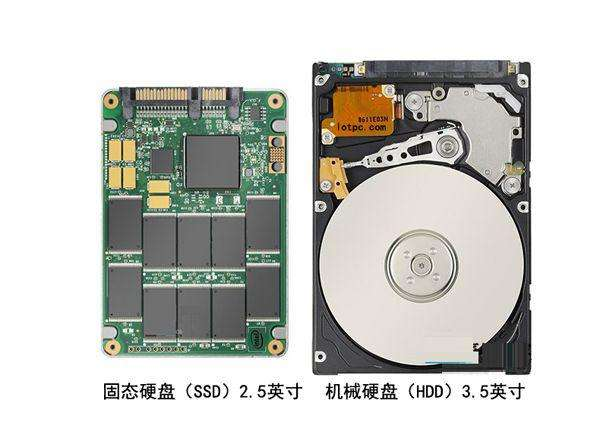

一、磁盘基本概念
设备文件：
Linux中一切皆文件：open（），read（），write（），close（）
设备类型：
- 块设备：block，存储单位”块”，磁盘
- 字符设备：char，存储单位”字符”，键盘
- 设备文件：关联至一个设备驱动程序，进而能够跟与之对应硬件设备进行通信
设备号码：
- 主设备号：maj number，标识设备类型
- 次设备号：min number，标识同一类型下的不同设备
磁盘结构
硬盘的接口类型：
并行：
IDE：133MB/s
SCSI：640MB/s
串口：
SATA：6Gbps
SAS：6Gbps
USB：480MB/s
硬盘：
机械硬盘（HDD）：传统普通硬盘，主要由：盘片，磁头，马达等组成
优势：相比固态硬盘，价格低，容量大，使用寿命长
固态硬盘（SSD）：用固态电子存储芯片阵列而制成的硬盘。
优势：相比机械硬盘，防震抗摔，传输速率，功率，噪音有优势
硬盘有价，数据无价，目前SSD不能完全取代HHD

磁盘设备的设备文件命名： /dev/DEV_FILE
硬盘接口命名如：SCSI,SATA,SAS,IDE,USB： /dev/sd
虚拟磁盘： /dev/vd
不同磁盘标识： a-z，aa，ab…
例如： /dev/sda,/dev/sdb
同一设备的不同分区： 1,2，…
例如：/dev/sda1,/dev/sda5
注：在脚本中，尽量避免使用磁盘设备文件名诸如sda，名称不稳定，应使用UUID
磁盘存储术语：
head：磁头； 8bit寻址 2**8=256
track：磁道；
ctlinder：柱面 10bit寻址 2**10=1024
sector：扇区 6bit寻址 2**6=64
CHS：磁盘三维。柱面、磁头、扇
采用24bit位寻址
其中前10位表示cylinder，中间8位表示head，后面6位表示sector。
最大寻址空间8GB
LBA： 逻辑区块地址
LBA是一个整数，通过转换成CHS格式完成磁盘具体寻址
LBA采用48个bit位寻址
最大寻址空间128PB
二、磁盘分区管理
我们知道使用磁盘有三个步骤：
- 创建分区
- 创建文件系统：格式化
- 挂载：分配目录名
为什么要对磁盘进行分区？
- 优化I/O性能
- 实现磁盘空间配额限制
- 提高修复速度
- 隔离系统和程序
- 安装多个OS
- 采用不同的文件系统
分区类型
两种分区方式：MBR，GPT
MBR：Master Boot Record
诞生于1982年，使用32位表示扇区数，分区不能超过2T
MBR如何分区：按柱面
0磁道0扇区：512bytes
446bytes：boot loader
64bytes：分区表
16bytes：标识一个分区（最多4个分区）
2bytes：55AA（分区标识位）
支持4个主分区；3个主分区+1扩展分区（N个逻辑分区）
注：生产中最好给MBR分区表进行备份
MBR分区结构:
MBR的硬盘主引导记录MBR由4个部分组成
- 主引导程序（偏移地址0000H–0088H），它负责从活动分区中装载，并运行系统引导程序。
- 出错信息数据区，偏移地址0089H–00E1H为出错信息，00E2H–01BDH全为0字节。
- 分区表（DPT,Disk Partition Table）含4个分区项，偏移地址01BEH–01FDH,每个分区表项长16个字节，共64字节为分区项1、分区项2、分区项3、分区项4
- 结束标志字，偏移地址01FE–01FF的2个字节值为结束标志55AA
BIOS+MBR
传统BIOS运行流程：
开机–>BIOS初始化–>BIOS自检–>引导操作系统–>进入系统
GPT：GUID（Globals Unique Identifiers）
支持128个分区，使用64位，支持8Z（512Byte/block）,64Z（4096Byte/block）
使用128位的通用唯一识别码UUID（Universally Unique Identifier）表示磁盘和分区表自动备份在头和尾两份，并有CRC校验位
UEFI（统一扩展固件接口）：硬件支持GPT，使操作系统启动
分区表
MBR保护+GPT分区表+GPT划分数据+备份
UEFI+GPT
UERI运行流程
开机–>UEFI初始化–>引导操作系统–>进入系统
管理分区
列出块设备： lsblk
创建分区使用：
fdisk 创建MBR分区
gdisk 创建GPT分区
parted 高级分区操作
partprobe： 重新设置内存中的内核分区表版本
parted命令
parted的操作都是实时生效的，小心使用
格式：parted[option]…[设备[命令[参数]…]…]
1 | parted /dev/sdb mklabel gpt|msdos 设置分区类型GPT或MBR |
分区工具fdisk和gdisk
查看分区:
1 | fdisk -l[-u][device…] |
管理分区（交互式）:
1 | fdisk /dev/sdb |
注：可使用重定向和多行重定向echo -e “n\np\n\n\n+2G\nw\n” | fdisk /dev/sdc
同步分区表
1 | cat/proc/partations 查看内核是否已经识别新的分区 |
三、文件系统管理
所谓文件系统，它是操作系统中藉以组织、存储和命名文件的结构。磁盘或分区和它所包括的文件系统的
不同是很重要的，大部分应用程序都基于文件系统进行操作，在不同种文件系统上是不能工作的。
文件系统类型
Linux文件系统：ext2，ext3，ext4，xfs，btrfs，reiserfs，jfs，swap
光盘：iso9660
Windows：FAT32,exFAT,NTFS
Unix：FFS（fast），UFS（unix），JFS2
网络文件系统：NFS，CIFS
集群文件系统：GFS2,OCFS2
分布式文件系统：fastfs,ceph,moosefs,mogilefs,glusterfs,Lustre
RAW：未经处理或者未经格式化产生的文件系统（性能好，但不便于管理）
根据文件系统是否支持”journal（日志）”功能可分为：
- 日志型文件系统：ext3，ext4，xfs，…（牺牲读取性能，防止数据文件破坏）
- 非日志型文件系统：ext2，vfat（易造成数据文件破坏）
文件系统的组成部分：
内核中的模块：ext4，xfs，vfat
用户空间的管理工具：mkfs.ext4，mkfs.xfs，mkfs.vfat
Linux的虚拟文件系统：VFS
查看支持的文件系统：cat /proc/filesystems
创建文件系统：
mkfs命令两种用法：
- mkfs.FS_TYPE /dev/DEVICE 建议使用此用法，直观不易出错
1 | ext4 |
- mkfs -t FS_TYPE /dev/DEVICE
1 | -L 'LABEL' 设定卷标（分区标签） |
mke2fs ext系统文件系统专用的管理工具
1 | -t {ext2|ext3|ext4} |
文件系统标签(LABEL): 它是指向设备的另一种方法，与设备无关
blkid 块设备属性信息查看
格式：blkid [option]… [DEVICE]
1 | -U UUID 根据指定UUID来查找对应设备 |
e2label：管理ext系列文件系统的LABEL卷标
格式：
1 | e2label DEVICE [LABEL] |
findfs : 查找分区
格式：
1 | findfs [option] LABEL = <label> 根据卷标查找 |
tune2fs 重新设定ext系列文件系统可调整参数的值
1 | -l 查看指定文件系统超级块信息 |
dumpe2fs
块分组管理，32768
1 | -h 查看超级块信息，不显示分组信息 |
超级块（superblock）
dumpe2fs /dev/sda1 查看分区下所有超级块
1 | dumpe2fs -h 查看超级块信息 |
超级块时存储文件系统的大小、有多少是空的和已经填满的占多少，以及它们各自的总数和其他诸如此类的信息。
要使用一个分区来进行数据访问，那么第一个要访问的就是超级块，由此可见超级块的重要性。
超级块占用第一号物理块，是文件系统的控制块。
超级块包括：文件系统的大小、空闲块数目、空闲块索引表、空闲i节点数目、空闲i节点索引表、封锁标记等。
超级块时系统为文件分配存储空间、回收存储空间的依据。
所以，为了防止超级块数据损坏，就需要对超级块数据进行备份，以便于损坏时进行修复。
文件系统检测和修复
常发生于死机或者非正常关机之后
挂载为文件系统标记为”no clean”
注意：一定不要在挂载状态下修复或检测，否则数据将破坏！
1 | fsck 文件系统检查 |
注：FS_TYPE一定要与分区上已设置的文件系统类型相同
e2fsck ext系列文件专用的检测修复工具
1 | -y 自动回答为yes |
四、设备挂载管理
挂载：把额外的文件系统与根文件系统现场的目录建立起关联关系，进而使得此目录作为其他文件访问入口的行为
一个挂载点只能挂载一个设备，但一个设备可挂载多个挂载点
挂载点建议要是空目录，否则该目录下原有文件将被隐藏，变为垃圾文件
把设备关联挂载点：mount Point
monut
卸载：为解除此关联关系的过程
卸载时：可使用设备，也可使用挂载点
umount
挂载命令：mount
cat /proc/mounts: 查看内核追踪到的已挂载的所有设备
格式：
1 | mount [-fnrsvw][-t vfstype] [-o options] device dir |
device 指明要挂载的设备
设备文件：例如dev/sda2
卷标：-L’LABEL’，例如-L’MYDATA’
UUID，-U’UUID’，例如-U ‘35bfb8f8-1c9a-4f67-b8fe-a7edb84c4780’
伪文件系统名称：proc，sysfs，devtmpfs，configfs
dir 挂载点
事先存在；建议使用空目录
进程正在使用中的设备无法被卸载
mount常用命令选项：
1 | -t 指定要挂载的设备上的文件系统类型 |
-o options：(挂载文件系统的选项)，多个选项使用逗号分隔
1 | async 异步模式（默认模式） |
默认：rw，suid，dev，exec，auto，nouser，async
卸载命令：umount
查看挂载情况：
1 | findmnt MOUNT_POINT|DEVICE |
查看正在访问指定文件系统的进程：
1 | lsof MONUT_POINT |
终止所有在正访问指定的文件系统的进程
1 | fuser -km MONUT_POINT |
卸载：
1 | umount DEVICE |
挂载点和/etc/fstab
配置文件系统体系
被mount、fsck和其他程序使用
系统重启时保留文件系统体系
可以在设备栏使用文件系统卷标
使用mount -a 命令挂载/etc/fstab中的所有文件系统
/etc/fstab 每行定义一个要挂载的文件系统
设备或伪文件系统 挂载点 文件系统类型 挂载选项 备份间隔时间{0|1|2} 文件系统检查{0|1}
要挂载的设备或伪文件系统
设备文件
LABEL：LABEL=” “
UUID：UUID=” “
伪文件系统名称：proc，sysfs
挂载点
文件系统类型
挂载选项：default
转储频率：0：不做备份 ； 1：每条转储 ； 2：每隔一天转储 ；
自检次序：0：不自检 ； 1：首先自检；一般只有rootfs才用1
一些特殊文件设备的挂载永久生效的设置：
vim /etc/fstab
/root/p1 /mnt/p1 ext4 loop 0 0 挂载普通文件
/mnt/cdrom /mnt/cdrom iso9660 defaults 0 0 挂载光盘
/boot /mnt/boot none bind 0 0 挂载目录到目录下